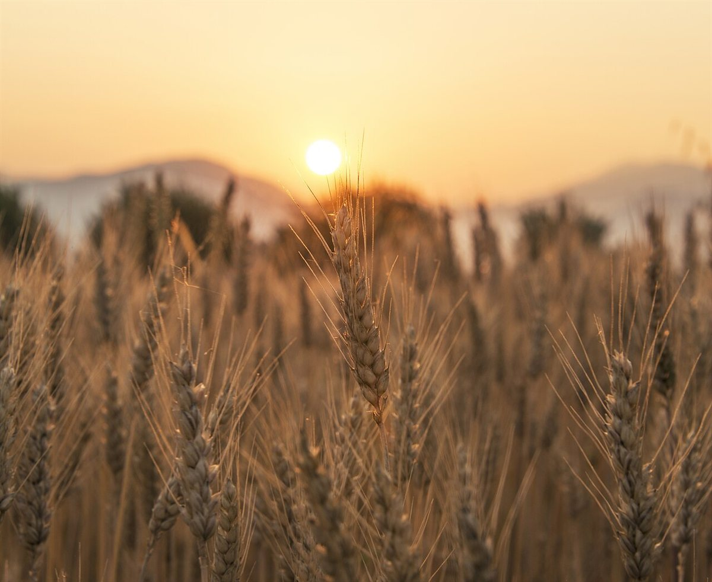
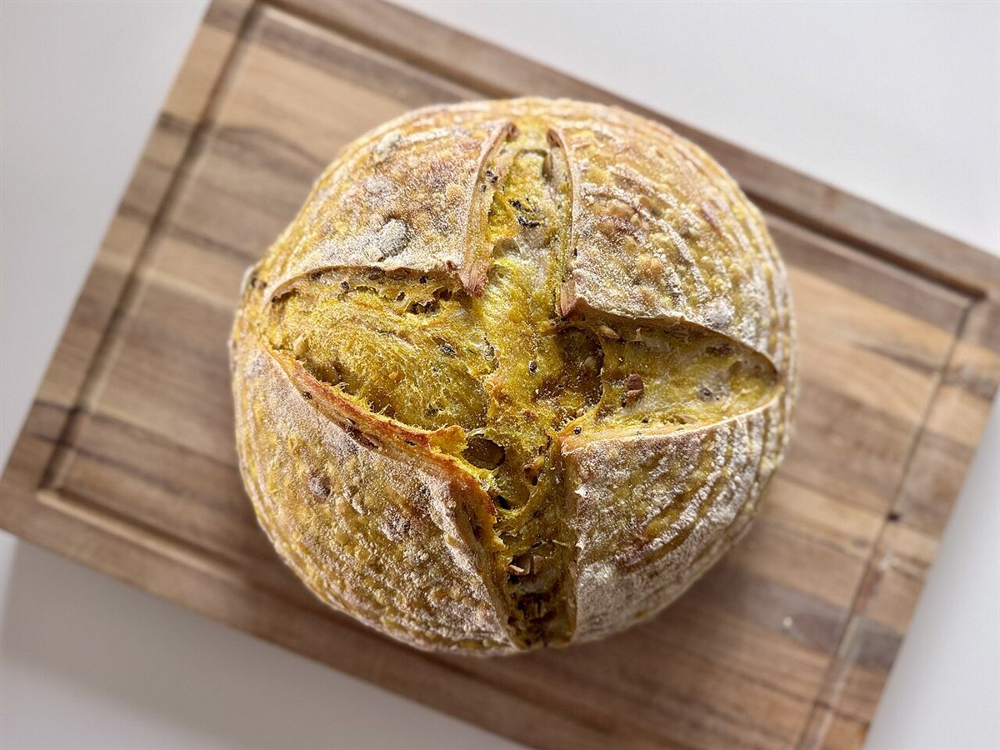
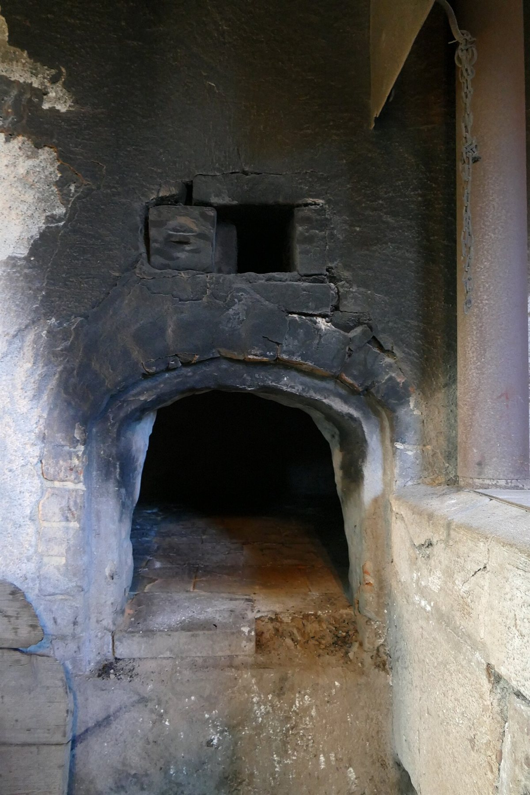
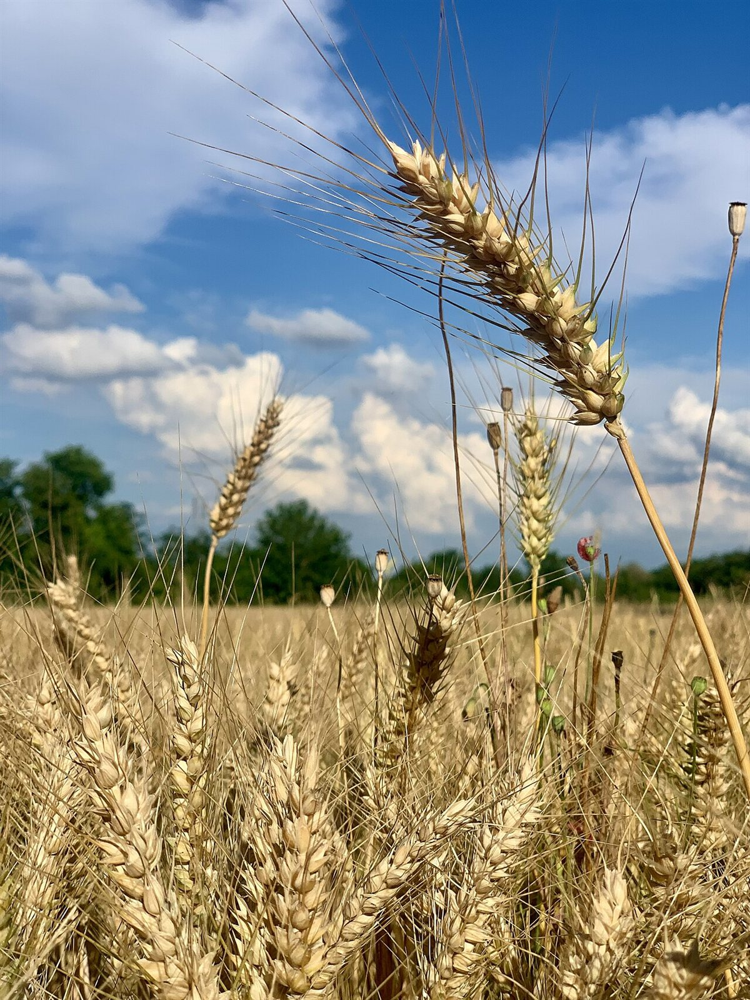

とよパン
千葉県山武郡横芝光町

パンのお店です。
写真はイメージです。お店の詳しい情報は、順次ご案内します。
イメージ写真
パン、窯、木、麦。やわらかな素材感のイメージ写真でご紹介します。




これらは店舗の実際の写真ではありません。
最新情報はInstagramで
商品や営業に関する最新情報は、Instagramでもご確認ください。
ご不明な点は、お電話でもお問い合わせください。
千葉県山武郡横芝光町

パンのお店です。
写真はイメージです。お店の詳しい情報は、順次ご案内します。
パン、窯、木、麦。やわらかな素材感のイメージ写真でご紹介します。



これらは店舗の実際の写真ではありません。
商品や営業に関する最新情報は、Instagramでもご確認ください。
ご不明な点は、お電話でもお問い合わせください。
掲載写真はフリー素材によるイメージです。店舗の実際の商品・店内・外観ではありません。日本国外・他地域で撮影された写真、撮影地が不明な写真を含みます。